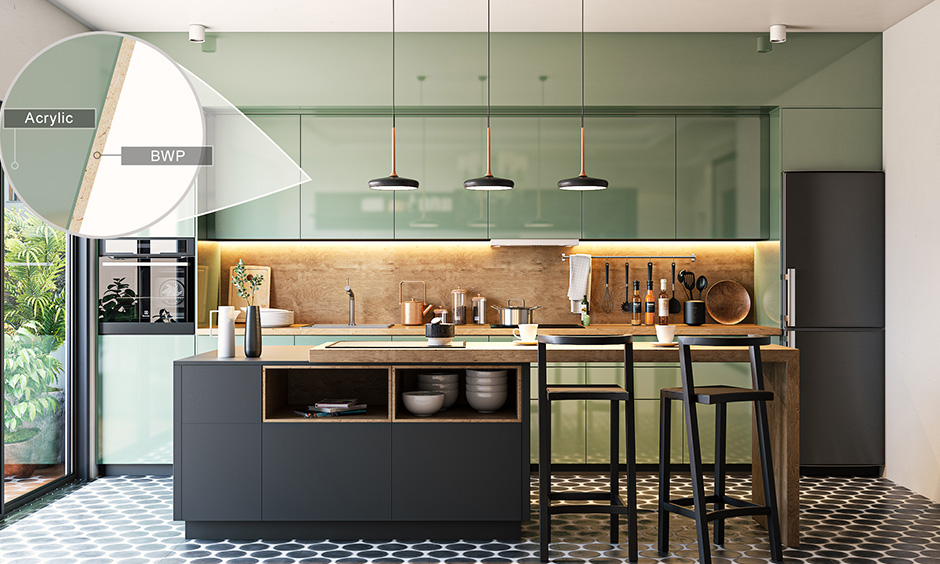
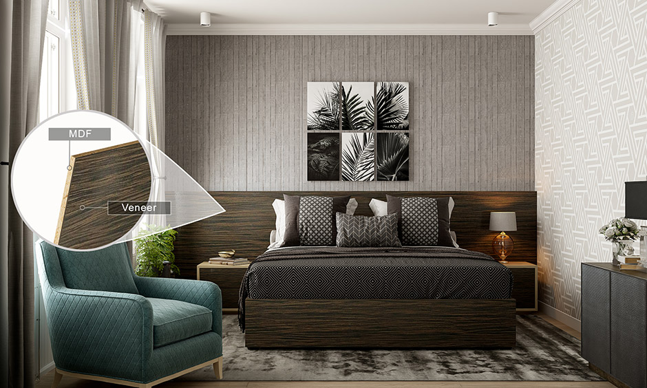
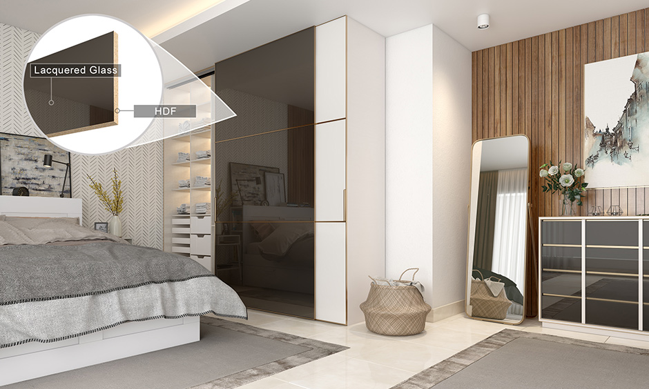
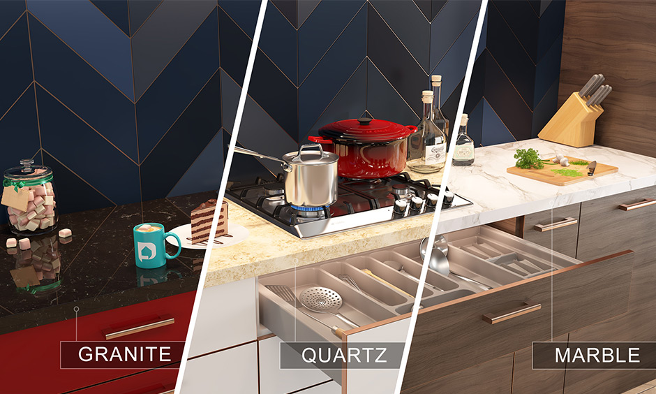
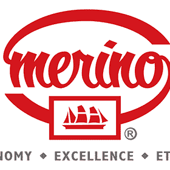
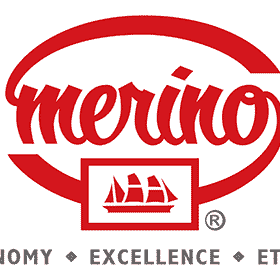
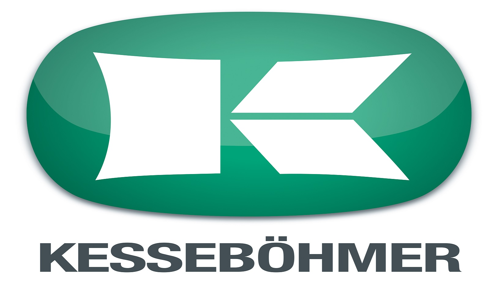
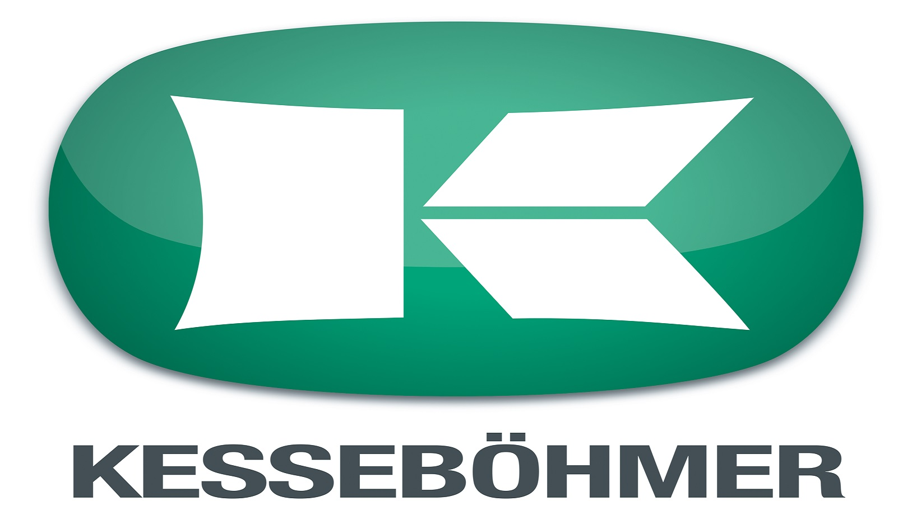

When it comes to designing interiors for your home, Materials and finishes act as a backbone and skin of every module and every piece of furniture; that supports the design of your interiors. Picking the right material and finishes will make your space seem unique and stylish.
We have created this guide to let you understand the difference between the two, so let’s start!
In the field of interior design materials refers to the core substance used to construct the structure or carcass of furniture. Modular furniture in particular is constructed with the use of highly engineered materials that allows interior designers to build innovative and sturdy pieces. Natural wood has been a traditional choice of material for furniture, and is not as effective as using an engineered material. This is because natural wood is heavy, expensive and cannot meet the design requirements of modular furniture.
Materials such as Commercial Plywood, Medium Density Fiberboard (MDF), High-Density Fiberboard (HDF), Boiling Water Proof Plywood (BWP), High-Density High Moisture Resistant (HDHMR) are materials made of wood composites engineered to achieve specific structural and durable properties otherwise not found in natural wood. The choice of material plays an important role in deciding the overall look of your home and is also dependent on your budget.
In layman terms, finishes are those elements that are fixed to the final structure of furniture. They are the final surface of the material and are used to protect it from impact, water, frost, corrosion, abrasion, stains et al. Finishes are also used to offer style, texture, colour and uniqueness to modular furniture design keeping with the overall interior design theme of the room. Laminates, acrylic, veneer, lacquered glass are some examples of finishes that are used on shutters, wardrobes, cabinets, entertainment units and other surfaces.
Listed below are different types of materials and finishes used together. Let’s take a read through shall we?
Boiling Water Proof or BWP is a specially treated plywood. It is made using a special glue that can withstand high humidity and boiling water for extended periods. It is chemically sealed to resist water, pests and works well in both dry and wet environments. It’s an ideal choice for base modules, wet areas, balconies, utility areas and terraces. Acrylics are thin sheets made of an acrylic polymer. It is a synthetic material available in a variety of designs, colours and patterns. They are pasted on shutters of modular furniture like kitchen cabinets. They are stain-resistant, water-resistant and highly durable.

Medium Density Fiberboard or MDF is made of the same wood pulp and waste product as HDF. The difference lies in the manufacturing process that results in a less dense product. It doesn’t warp or swell and is commonly used to build the structure of modular furniture. Veneers are a finish. They are thinly sliced sheets of real wood (usually as thin as 3 mm)coated with varnish to bring out the natural grain of wood. Unlike laminates, every sheet of veneer has a unique grain pattern as they are not printed in a factory. Veneers can be buffed and polished periodically to look like new if they wear out over time. This property makes veneers cost-effective in the long run though they are more expensive in comparison to other options. They are the closest you can get to solid natural wood in modular furniture design.

High-Density Fiberboard or HDF is a type of engineered wood made from wood pulp, wood waste and chips mashed together. As the name suggests, it is much harder than MDF. This material is not moisture resistant and can absorb water. Since it is very strong material, it is used in those pieces of furniture that need a firm structure. Lacquered glass or ceramic glass is a popular finish that goes well with HDF. It is used on shutters and lends a classy glossy look. It is highly durable, scratch and water-resistant and does not fade or lose lustre with time. Most of the lacquered glass used in modular furniture is from Saint Gobain, a large player in the market. Lacquered glass is available in a wide assortment of colours.

Materials also include stones, both natural and synthetic, used as countertops, backsplashes, wall tiles and wall panelling. Some of the commonly used natural stones are granite, marble, and sandstone. They are used as countertops, as wall panels for pooja units or even as back panels for TV units. Synthetic stones such as quartz, corian come in a variety of colours and finish options as they can be manufactured to suit myriad tastes and requirements of customers.
 

 
